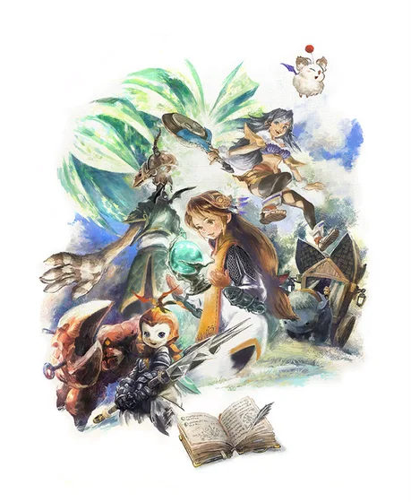
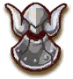
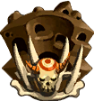
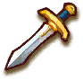
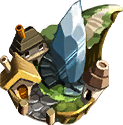
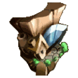
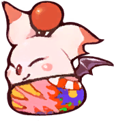
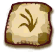

Crystal Caravan Codex
A field guide for Final Fantasy Crystal Chronicles on the Gamecube, from first-time players to speedrunners. Plan your crafting, see your real odds of getting an artifact, and look up any monster's weak points.

Explore the Codex
 ArtifactsAll 73 artifacts, where they drop, and the actual chance of
each one.
ArtifactsAll 73 artifacts, where they drop, and the actual chance of
each one.

BestiaryMonster stats and resistances, scaled for your cycle and party size.
DungeonsEnemies and chests per cycle, bonus point goals and boss reward sets.
ItemsWeapons, armour, accessories, materials, food and shop stock.
TribesClavat, Lilty, Yuke and Selkie side by side, down to the frame. Magic & DamageSpell fusions, status durations and a damage calculator.
World & EventsYear-by-year guide, towns, caravan encounters and missables.
Towns & ShopsEvery town's map with its shops, smiths and Moogle Nest, and what each shop sells.
Mog StampsAll 23 stamps on one card – tick them off and jump straight to each Moogle Nest. The Unknown ElementLynari Desert's spell puzzle, step by step and pinned on the map – the chalice element that crosses every miasma stream.
Caravan TrackerTrack each caravanner's artifacts, stats and myrrh, saved in your browser.How drops really work
When you finish a dungeon, the game unlocks reward sets based on the dungeon's cycle and your bonus points. It then picks one unlocked set at random, and you choose one artifact from that set. Scoring higher adds the better sets to the pool, but the earlier sets stay in it too.
So on cycle 1 with top-tier points, each of the four sets has a 25% chance. The calculator does this maths for you.
Which version is this?
Numbers are for the original GameCube release unless a note says otherwise. Where guides disagree we use the FFCC World Ultimania, the official Japanese data book.
Spotted a mistake? Every table is a plain JSON file. See Sources & contributing.